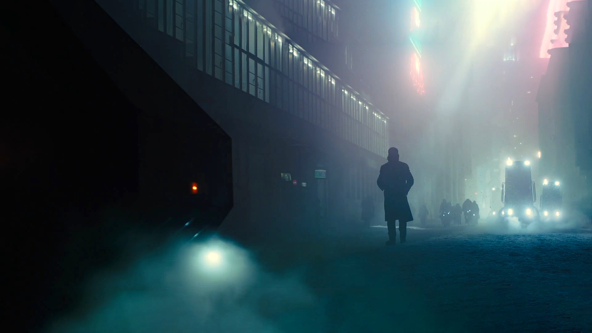

The Story so far
It is 2049; humans are now bioengineered, and they are also enslaved. K is a replicant who is a member of the Los Angeles Police Department, hunting and killing replicants who have fallen foul of the law. His official job description is blade runner. He retires a replicant named Sapper Morton whilst he is at a protein farm, and he also finds the remains of a female replicant in a box under a tree. She died during childbirth. K realizes that in finding her, he has also found knowledge that could start a war between humans and replicants; the bioengineered humans were thought to not be able to reproduce biologically. Finding the body of a pregnant woman shows that this is not the case.

The Chase
As the story progresses, and as K continues to search out the truth, the Head of Wallace corp tries to bury the truth of a replicant child, by sending in agents, like His "secretary" who first meets K while he is looking in the electronic archives for the proof of a child. This secretary will continue chase throughout the Film as K gets closer and closer to the truth, as well as going rogue. Others along the way including the head of blade runner unit, also try to stop K, although a twist ending sees them fail.